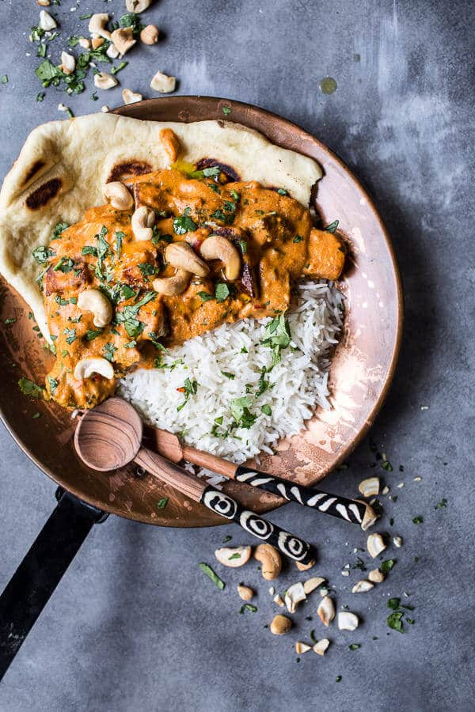

| Name |
|
Recipe |
| Butter Chicken |
 |
In a bowl, combine chicken with all of the ingredients for the chicken marinade; let marinate for 30 minutes to an hour (or overnight if time allows).
Heat oil in a large skillet or pot over medium-high heat. When sizzling, add chicken pieces in batches of two or three, making sure not to crowd the pan. Fry until browned for only 3 minutes on each side. Set aside and keep warm. (You will finish cooking the chicken in the sauce.)
Heat butter or ghee in the same pan. Fry the onions until they start to sweat (about 6 minutes) while scraping up any browned bits stuck on the bottom of the pan.
Add garlic and ginger and sauté for 1 minute until fragrant, then add ground coriander, cumin and garam masala. Let cook for about 20 seconds until fragrant, while stirring occasionally.
Add crushed tomatoes, chili powder and salt. Let simmer for about 10-15 minutes, stirring occasionally until sauce thickens and becomes a deep brown red colour.
Remove from heat, scoop mixture into a blender and blend until smooth. You may need to add a couple tablespoons of water to help it blend (up to 1/4 cup). Work in batches depending on the size of your blender.
Pour the puréed sauce back into the pan. Stir the cream, sugar and crushed kasoori methi (or fenugreek leaves) through the sauce. Add the chicken with juices back into the pan and cook for an additional 8-10 minutes until chicken is cooked through and the sauce is thick and bubbling.
Garnish with chopped cilantro and serve with fresh, hot garlic butter rice and fresh homemade Naan bread! |
| Vegetable Biryani |
|
Step 1
Bring 1 L (4 cups) water to boil in medium saucepan. Add rice; return to boil. Simmer on medium heat 7 to 8 min. or until rice is tender; drain. Spread onto rimmed baking sheet; cool slightly.
Step 2
Meanwhile, heat oil in deep large skillet on medium-high heat. Add vegetables, ginger, garlic and cumin seed; cook and stir 6 to 8 min. or until vegetables are softened. Stir in cream cheese product, tomato paste, seasonings and remaining water; cover. Simmer on medium-low heat 3 to 5 min. or until sauce is slightly thickened.
Step 3
Add rice to vegetable mixture; cook 3 to 5 min. or until sauce is absorbed and mixture is heated through, stirring occasionally. Remove from heat. Let stand 5 min. before serving. |
| Samosa |
 |
Step 1
Bring a medium saucepan of lightly salted water to a boil. Stir in potatoes and peas. Cook until potatoes are tender but still firm, about 15 minutes. Drain, mash together and set aside.
Step 2
In a large saucepan over medium high heat, heat the oil. Brown cumin seeds and bay leaf. Mix in onions and ground beef. Cook until beef is evenly brown and onions are soft, about 5 minutes. Mix in garlic, fresh ginger root. Season with black pepper, salt, cumin, coriander, turmeric, chili powder, cinnamon and cardamom. Stir in the mashed potato mixture. Remove from heat and chill in the refrigerator for 1 hour, or until cool.
Step 3
Heat oil in a large, heavy saucepan over high heat.
Step 4
Mix cilantro and green chile peppers into the potato and beef mixture. Place approximately 1 tablespoon of the mixture onto each phyllo sheet. Fold sheets into triangles, pressing edges together with moistened fingers.
Step 5
In small batches, fry until golden brown, about 3 minutes. Drain on paper towels and serve warm. |
| creamy cashew indian butter paneer |
 |
Heat a large skillet over medium heat and add 1 tablespoon coconut oil (or ghee). Once hot, add the cubed paneer in batches and cook about 2 minutes per side or until crisp. Remove from the heat and drain on paper towels. Repeat with any remaining paneer. Reserve the skillet and set the paneer aside.*
To a food processor or high powered blender, add the cashews and coconut milk. Blend on high until completely smooth and silky, about 3-4 minutes. Add the tomato paste, yogurt and 1/2 cup water. Blend until smooth. Set aside.
To the same skillet you fried the paneer, add the remaining tablespoon of oil. Once hot, add the onion, garlic and ginger, cook about 5-8 minutes or until the onion is soft and lightly caramelized. Add the curry powder, thai red curry paste, garam masala, turmeric, cayenne and salt. Cook one minute and then stir in the cashew/coconut mixture. Bring the sauce to a gentle boil and if it seems too thick for your liking, stir in water or coconut milk to thin. Once the sauce is at your desired consistency, stir in the crispy paneer and saffron if using. Add the broccoli and cook until warmed through and the sauce thickened slightly, about 5 minutes. Remove from the heat and serve over a bed of hot rice sprinkled with chopped cilantro. And don't forget the naan for dipping! |